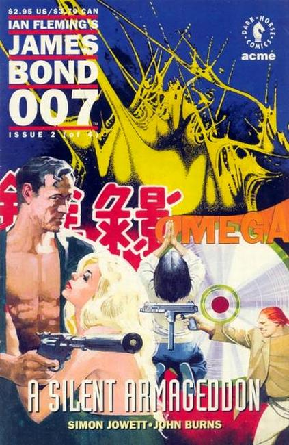

Death in virtual reality. Has Bond met his match with Omega, a computer that has acquired the most valuable possession of all -- consciousness? Bond turns to help from a most unexpected source -- a thirteen-year-old girl. James Bond 007: A Silent Armageddon takes Bond to new dimensions of adventure.

Omega, the most powerful computer in the world, is the prize coveted by agents of CERBERUS -- a prize they will kill to possess. With Omega under CERBERUS' control, they will have access and control of a worldwide communications system. What will Bond do to prevent this silent coup, especially when Omega seems to be evolving a consciousness of its own?